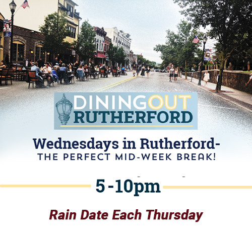

Exciting news! The Borough of Rutherford would like to announce that Dining Out Rutherford will now be able to take place two nights a week. While the Borough is able to provide the funding for closing the street one night a week, the second night has been made possible by a generous resident who is a longtime supporter of Rutherford restaurants and wants to help them succeed during this difficult time. This donation will allow an additional 10 evenings of Dining Out to be spread out over the next three months, weather permitting. This week Dining Out will take place on Wednesday and Thursday. Park Avenue will be closed to street traffic between 4-11 pm so patrons can enjoy ample outdoor distancing. More information will be provided this week about this and other topics.
Yellowtail Sushi
Sonoma Bistro
Azteca
Suprema
Kabob on the Cliff
Volares
Steve and Andreas
Paisanos
Rutherford Pancake House
Mambo (Union Ave)
Ferazzolis (Union Ave)
Park Ave from the Library to Ames Ave will be closed from 4-11pm.
Dining Out Rutherford will be an ongoing event on Wednesdays with a raindate of Thursdays. We will do our best to update you with street closures and participating restaurants and businesses as that information becomes available.
When dining out, it is strongly recommended that you make reservations so that our restaurants can better prepare for their evening. Please remember that business owners, staff and patrons are all creating a new normal as this chapter of reopening begins. Be respectful and patient with each other!
All participating businesses will comply with the regulations outlined by the Governor’s Executive Order and the NJ Department of Health.
Are you a Rutherford business owner? See the link below where you can find necessary forms and information for operating outdoors. Email rvanwinkle@rutherfordboronj.com with any questions